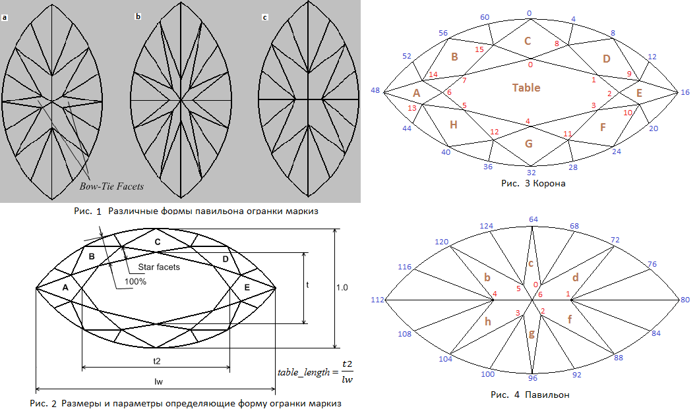

В данном разделе мы создадим модель огранки, которая носит название
Маркиз.
По ссылке
Marquise - Light Dispersion
можно увидеть многогранник "Маркиз" отображенный при помощи кубических карт. При нажатии на приведенной по ссылке
странице кнопки Inverse многогранник отобразится на черном фоне.
В коллекции бриллиантов Кардинала Мазарини, находился бриллиант весом более 15 карат, похожий по форме на современный "Маркиз".
Тогда такие бриллианты называли "Navette" - маленькая лодочка, и подобные огранки делали из алмазов вытянутой формы.
Как считается огранка "Маркиз" получила свое название во времена правления Людовика XV по имени Маркизы де Помпадур.
Огранки типа маркиз (рис. 1) обычно имеют одинаковую форму короны, но могут различаться количеством основных граней павильона и их расположением. В online-программе этой главы рассматривается построение огранки маркиз с шестью основными гранями павильона. На рисунке 1 показаны павильоны огранок маркиз с другим количеством основных граней. Следует заметить, что существуют огранки маркиз, у которых количество граней павильона и их расположение совпадает с количеством граней и их расположением огранки бриллиант.
Павильон огранки маркиз содержит четное количество граней, изменяющееся в пределах от двух до восьми в зависимости от огранки. Грани на павильоне также могут иметь различное расположение. По внешнему виду павильона все огранки маркиз, вне зависимости от количества граней, делятся на два класса. На рисунке 1-a огранка принадлежит одному классу, а на рисунках 1-b и 1-c – другому классу огранок. У огранки, обозначенной на рисунке буквой a, расположение главных граней на павильоне – стандартное. Две четырехугольные основные грани павильона присутствуют у нее в месте, где проходит главный диаметр огранки. Эти две грани, так как они выглядят похожими на галстук-бабочку, носят название Bow-Tie Facets. У огранок b и c в месте, где проходит главный диаметр огранки, основные грани павильона отсутствуют. Такие огранки называются WBT-огранками (Without Bow-Tie Facets). В некоторых случаях, например, в огранках с лунными гранями, которые мы рассмотрим ниже, павильон WBT-огранок маркиз выглядит, возможно(?), предпочтительнее, чем павильон со стандартным расположением главных граней. Но, в принципе, выбор расположения граней павильона является делом вкуса конкретного человека. Заметим, что для огранок овал, сердце и груша также часто используется WBT-расположение основных граней павильона.
Павильоны огранок со стандартным расположением основных граней, строятся по тому же принципу, что и павильон огранки бриллиант. Павильон WBT-огранок строится несколько иначе, так как в месте расположения главного диаметра огранки отсутствуют основные грани павильона и, поэтому, угол наклона ни одной главной грани павильона не совпадает со значением параметра задающего угол павильона (который, напомним, обычно определяется в месте главного диаметра огранки).
Корона огранки маркиз похожа на корону огранки бриллиант. У них совпадает количество граней и их взаимное расположение, но отличается общий вид. Главное отличие огранок маркиз и бриллиант заключается в том, что рундисты этих двух типов огранок имеют существенно различающуюся форму, что влечет за собой и значительные различия в методах их построения. Построение рундиста огранки маркиз мы подробно рассмотрели в предыдущей главе.
На рисунке 3 приведена нумерация вершин короны, а на рисунке 4 - павильона.
var lw = 1.8; // Отношение длины огранки к ее ширине // Форма и толщиа рундиста var r = 0.05; // Толщина рундиста var vp = 0.0; // Угол, определяющий величину отклонения кривой от окружности // (смотри предыдущую главу) // Корона var beta = 35*DEGREE; // Угол короны var DeltaAngleCrown = -1.0*DEGREE; // Значение отклонения угла наклона короны var t = 0.60; // Ширина площадки var table_length = 0.72; // Позволяет изменять длину площадки вдоль оси X (смотри рис. 2) // Следующие два параметра задают положение средних вершин короны // В данной програме сделаны два варианта построения короны. // При помощи переключателей Crown 1 и Crown 2 можно выбрать один из них. // При выборе Crown 1 используется параметр starFacet. // При выборе Crown 2 используется параметр dSquare. var starFacet = 0.5; // Задает положение средних вершин короны для Crown 1 var dSquare = 0.00001; // Задает положение средних вершин короны для Crown 2 // Павильон var angle_pav = 40*DEGREE; // Угол павильона var hPavFacet = 0.8; // Определяет положение нижних вершин клиньев павильона var CuletX = 0.00001; // Смещение калетты вдоль оси X var CuletY = 0.00001; // Смещение калетты вдоль оси Y // Расстановка вершин на рундисте var DelAngGirdle_4 = 2.0*DEGREE; // Задает положение вершины рундиста g4 var DelAngGirdle_8 = 2.0*DEGREE; // Задает положение вершины рундиста g8 var DelAngGirdle_12 = 2.0*DEGREE; // Задает положение вершины рундиста g12
Построение рундиста подробно рассмотрено в предыдущей главе.
В данной програме сделаны два варианта построения короны.
При помощи переключателей Crown 1 и Crown 2 можно выбрать один из них.
При выборе Crown 1 используется параметр starFacet и этот вариант построения короны рассмотрен первым.
При выборе Crown 2 используется параметр dSquare и этот вариант построения расмотрен вторым.
Корону огранки маркиз можно построить примерно таким же способом, каким была построена корона бриллианта. Но при таком варианте построения, чем больше становится удлинение огранки, тем больше становятся несимметричными главные грани короны B и D. Внешний вид короны огранки становится менее красивым. К сожалению, как бы мы не меняли параметры определяющие форму короны при таком способе ее построения, избавиться от искажений граней нам не удастся. Поэтому выберем для построения короны огранки маркиз способ отличный от того, который был использован для создания короны огранки бриллиант. Как мы увидим в дальнейшем, при таком варианте построения короны в случае изменения удлинения огранки вид граней B и D короны искажаться не будет.
Для построения короны необходимо выбрать соответствующий набор параметров, определяющих ее форму и входящих
в СДМ в качестве полей структуры.
Параметр beta – задает угол наклон грани C, а также (с некоторыми ограничениями)
и наклон граней B и D короны к горизонтальной плоскости OXY.
Параметр t задает размер площадки в месте, где огранка имеет минимальный (главный) диаметра огранки.
Параметр table_length задает размер площадки в том месте, где огранка имеет максимальный (второй) диаметра огранки.
Численное значение этого параметра определяется по следующей формуле
table_length = t2 / lw
Значение параметра DeltaAngleCrown задает величину отклонения угла наклона граней
B и D от значения угла наклона beta грани C.
Определение параметра Star Facets (поле в СДМ - starFacet) показано на рисунке 2.
Отметим, тот факт, что в отличие от огранки бриллиант, в которой параметр Star Facets является вычисляемым параметром,
в огранке маркиз этот параметр имеет свое поле в СДМ и задается напрямую.
Расчет координат вершин короны осуществляется внутри функции VerticesCalculation.
Исходный текст этой функции приведен на листинге далее.
Расчет координат производится для вершин короны лежащих в левой верхней четверти на рисунке 3.
Это вершины – 0, 6, 7, 14 и 15. Координаты остальных вершин короны определяются исходя из соображений симметрии.
Рассчет координат вершин короны производится в следующей последовательности.
После того как вычислены координаты вершин рундиста находятся уравнения плоскостей в которых лежат грани короны B и C.
Для получения уравнений используется функция CreateInclinePlane.
Затем можно перейти к вычислению координат вершины 7 короны. Для этого через вершину рундиста 56 проводится вертикальная плоскость расположенная перпендикулярно касательной к рундисту в его вершине 56. Зная уравнения этой плоскости, а также плоскости грани B и плоскости в которой лежит площадка, можно найти положение вершины 7 короны как точку пересечения трех плоскостей. Особо следует заметить, что вычисленное значение координат вершины 7 является предварительным и затем будет пересчитано.
Найденное же в данный момент положение вершины 7 короны необходимо для того, чтобы найти координаты вершины 15 короны, которые определяются значением параметра Star Facets. Чтобы учесть значение этого параметра при определении положения вершины 15 короны поступим следующим образом. Прежде всего, найдем прямую, по которой пересекаются плоскости, в которых лежат грани B и C короны. Затем ограничим эту прямую с двух стророн – с одной стороны вертикальной плоскостью проходящей касательно к рундисту в его вершине 60, а сдругой стороны – вертикальной плоскостью проходящей через вершины 0 и 7 короны. В результате усечения прямой пересечения плоскостей B и C получен отрезок, который значение параметра Star Facets делит на две части. Точка деления, очевидно, является вершиной 15 короны. Значение координаты Z вершины 15 определяет высоту горизонтальной плоскости, в которой лежат все средние вершины короны – вершины 8, 9, 10, 11, 12, 13, 14 и 15. Заметим, что предпочтительно, чтобы все средние вершины короны большинства огранок принадлежали одной и той же горизонтальной плоскости (имели одинаковое значение координаты Z).
Осталось найти координаты вершины 14 и скорректировать положение вершины 7 короны. Вершина 14 расположена в точке пересечения трех плоскостей – плоскости, в которой лежит грань A, плоскости в которой лежит грань B и горизонтальной плоскости, в которой лежат вершины 8, 9, 10, 11, 12, 13, 14 и 15 короны. Корректировка положения вершины 7 производится в плоскости площадки и необходима для того, чтобы уменьшить искажения грани, проявляющиеся в том, что четырехугольник грани отличается по внешнему виду от ромба. Корректировка осуществляется следующим способом. Через середину отрезка соединяющего вершины 14 и 15 короны проводится вертикальная плоскость. Новое положение вершины 7 находится как точка пересечения проведенной вертикальной плоскости, плоскости в которой лежит грань B и плоскости которой принадлежит площадка.
InitGirdle(); // Вспомогательные переменные var i; var Y1 = new Vector3D(0, 1, 0); var Z1 = new Vector3D(0, 0, 1); var OXZ = new Plane3D(); OXZ.CreatePlaneThreePoints(new Point3D(1,0,0), new Point3D(0,0,1), new Point3D(0,0,0)); var OYZ = new Plane3D(); OYZ.CreatePlaneThreePoints(new Point3D(0,0,0), new Point3D(0,0,1), new Point3D(0,1,0)); var h = h = 0.5 * Math.tan(beta); var h_crown = h * (1 - t); // Определяем уравнения плоскостей в которых лежат грани A и B короны //Plane3D plane_C, plane_B; var plane_C = new Plane3D(); plane_C.CreateInclinePlane(beta, girdle[60], girdle[4], girdle[0]); var plane_B = new Plane3D(); plane_B.CreateInclinePlane(beta - DeltaAngleCrown, girdle[52], girdle[60], girdle[56]); // Вектора идущие вдоль линий касательных к рундисту в его вершинах 56 и 0 var dir_B = new Vector3D(girdle[57][0] - girdle[55][0], girdle[57][1] - girdle[55][1], 0); dir_B.Normer() var dir_C = new Vector3D(girdle[1][0] - girdle[63][0], girdle[1][1] - girdle[63][1], 0); dir_C.Normer(); // Плоскости проходящие перпендикулярно к линиям, //касательным к рундисту в его вершинах 56 и 0 var pl_Bp = new Plane3D(); pl_Bp.CreatePlaneNormalVectorPoint(dir_B, girdle[56]); var pl_Cp = new Plane3D(); pl_Cp.CreatePlaneNormalVectorPoint(dir_C, girdle[0]); var pl_table = new Plane3D(); // горизонтальная плоскость на уровне площадки pl_table.CreatePlaneNormalDistOXYZ(Z1, h_crown + r/2); // Находим координаты вершины 0 короны crown[0] = pl_table.IntersectionThreePlanes(plane_C, OYZ); var pl_tab_len = new Plane3D(); // вспомогательная вертикальная плоскость || OYZ pl_tab_len.CreatePlaneNormalDistOXYZ(new Vector3D(1,0,0), - lw * table_length / 2); // Координаты вершины 6 короны crown[6] = pl_table.IntersectionThreePlanes(pl_tab_len, OXZ); // Координаты вершины 7 короны crown[7] = pl_table.IntersectionThreePlanes(plane_B, pl_Bp); // Вычисление исходя из значения StarFacet высоты // горизонтальной плоскости короны, которая определяет // расположение вершин 13, 14, 15, 8, 9, 10 короны // Вычисляем векторное произведение нормалей к плоскостям pl_B и pl_C var vecB = plane_B.Normal(); var vecC = plane_C.Normal(); var vec_cross = vecB.Cross(vecC); // Вектор направленный касательно к рундисту в вершине girdle[60] var dir_g60 = new Vector2D(girdle[61][0] - girdle[59][0], girdle[61][1] - girdle[59][1]); dir_g60.Normer(); // Вектор направленный перпендикулярно к предыдущему вектору // является нормальным вектором вертикальной плоскости // касательной к рундисту в его вершине g60 var dir_g60_p = new Vector3D(dir_g60[1], -dir_g60[0], 0.0); // Плоскость направленная перпендикулярно к рундисту в вершине girdle[60] var pl_g60_p = new Plane3D(); pl_g60_p.CreatePlaneNormalVectorPoint(dir_g60_p, girdle[60]); // Вспомогательная точка pt_help_1, лежащая на линии // пересечения плоскостей plane_B и plane_C и pl_g60_p var pt_help_1 = pl_g60_p.IntersectionThreePlanes(plane_B, plane_C); // Прямая, проходящая по линии пересечения // плоскостей plane_B и plane_C и точку pt_help_1 var line = new Line3D(); var ln_help = line.CreateLineVectorPoint(vec_cross, pt_help_1); // Вертикальная плоскость проходящая через вершины crown[0] и crown[7] var pl_cr7_cr_0 = new Plane3D();; pl_cr7_cr_0.CreatePlaneThreePoints(crown[7], crown[0], new Point3D(crown[0][0], crown[0][1], crown[0][2] + 1.0)); // Находим точку пересечения плоскости pl_cr7_cr_0 и прямой ln_help var pt_help_2 = ln_help.IntersectionLinePlane(pl_cr7_cr_0); var l = pt_help_2[0] - pt_help_1[0]; var m = pt_help_2[1] - pt_help_1[1]; var n = pt_help_2[2] - pt_help_1[2]; crown[15] = new Point3D(pt_help_2[0] - l*starFacet, pt_help_2[1] - m*starFacet, pt_help_2[2] - n*starFacet); // Пл-ть. проходящая через вершину 15 короны параллельно пл-ти OXY var pl_middle = new Plane3D(); pl_middle.CreatePlaneNormalDistOXYZ(Z1, crown[15][2]); var plane_A = new Plane3D; // уравнение плоскости грани A plane_A.CreatePlaneVectorTwoPoints(new Vector3D(0,1,0), girdle[48], crown[6]); // Находим координаты вершины короны 14 crown[14] = pl_middle.IntersectionThreePlanes(plane_A, plane_B); // Находим координаты середины отрезка // заключенного между вершинами короны 14 и 15 var pt = new Point3D((crown[14][0] + crown[15][0])/2.0, (crown[14][1] + crown[15][1])/2.0, 1.0); // Находим уравнение вертикальной плоскости проходящей через точку pt var dir = new Vector3D(crown[14][0] - crown[15][0], crown[14][1] - crown[15][1], 0.0); dir.Normer(); var pl_Vert = new Plane3D(); pl_Vert.CreatePlaneNormalVectorPoint(dir, pt); // Пересчет координат вершины короны 7 crown[7] = pl_table.IntersectionThreePlanes(pl_Vert, plane_B); // исходя из учета симметрии огранки crown[1] = new Point3D(-crown[7][0], crown[7][1], crown[7][2]); crown[2] = new Point3D(-crown[6][0], crown[6][1], crown[6][2]); .................................................................. crown[13] = new Point3D(crown[14][0], -crown[14][1], crown[14][2]); // Корректировка положения вершин рундиста по оси Z corr_gd_crown(0, 4, 8); corr_gd_crown(4, 8, 8); ........................ corr_gd_crown(60, 0, 15);
Рассмотрим еще один способ построения короны огранки иаркиз. При этом спосбе откажемся от возможности задавать
угол наклона главных граней павильона B и D при помощи параметра DeltaAngleCrown – углы наклона этих граней
теперь будут определяться автоматически в процессе построения короны. В предыдущем способе в СДМ содержалось поле starFacet,
посредством которого задавалось положение средних вершин короны 8, 9, . . . 15.
Возможно, при использовании этого варианта построения корона будет иметь более красивый вид чем при исползовании предыдущего варианта так как ребра нижних клиньев короны подходят к рундисту всегда под прямым углом – вне зависимости от того какие значения принимают параметры определяющие форму и размер рундиста и короны.
Сейчас вместо поля starFacet введем в СДМ поле dSquare (вспоминаем построение короны бриллианта) и соответствующий
этому полю параметр имеющий название Square table. Действие этого параметра на корону было рассмотрено в разделе,
где рассматривалась огранка бриллиант. Что касается параметра Star facets, то в рассматриваемой огранке сделаем его вычисляемым.
Используя значение dSquare определим положение не всех средних вершин короны, а только одной – вершины 15.
Высота этой вершины определит высоту горизонтальной плоскости, на которой лежат эта и все остальные средние вершины короны.
Положение вершины 15 короны в горизонтальной плоскости OXY впоследствии будет скорректировано.
Используя значение параметра table_length, определяется положение вершины короны 6.
Зная координаты этой вершины можно определить уравнение плоскости, в которой лежит грань A короны.
Уравнение плоскости, в которой лежит грань C короны определяется углом короны и тем фактом,
что эта плоскость расположена симметрично относительно плоскости OYZ. Зная уравнения плоскостей,
в которых лежат грани A и C, а также уравнение горизонтальной плоскости, в которой лежат все средние вершины короны,
можно рассчитать положение вершины короны 14 и пересчитать координаты вершины 15 короны.
Для определения координат этих двух вершин проводятся две вертикальные плоскости перпендикулярные рундисту в его вершинах 52 и 60. Затем находятся точки пересечения проведенных плоскостей с плоскостями, в которых лежат грани A и C и, плоскости проходящей на уровне средних вершин короны. Тем самым будут найдены искомые координаты вершин 14 и 15 короны. Причем при таком найденном положении этих вершин ребра соединяющие вершину короны 14 с вершиной рундиста 52 и вершину короны 15 с вершиной рундиста 60 окажутся расположенными перпендикулярно рундисту огранки. Затем находится уравнение плоскости, в которой расположена грань B по трем принадлежащим этой плоскости точкам – вершинам короны 14 и 15, а также вершине рундиста 56.
Для определения положения вершины 7 проводится вертикальная плоскость перпендикулярная отрезку, соединяющему вершины 14 и 15 короны. Координаты вершины 7 определяются как координаты точки пересечения трех плоскостей – проведенной вертикальной плоскости, плоскости в которой лежит грань B и плоскости, в которой лежит площадка огранки.
Исходный текст той части программы, где происходит рассмотренный способ нахождения вершин короны, приведен ниже по тексту. Этот кусок текста можно вставить в функцию
VerticesCalculation после вызова функции InitGirdle.
Предварительно следует убрать используемый ранее расчет вершин короны. Из dat.GUI потребуется убрать
параметр DeltaAngleCrown и добавить параметр dSquare.
Параметр stаrFacet теперь будет действовать только на чтение.
// В СДМ должны ввести поле dSquare dSquare = 0.0; var upPoint = 0.5 * Math.tan(beta) + r/2; var h_cr = 0.5 * Math.tan(beta) * (1 - t); // Определение уравнений касательных в заданных вершинах рундиста к самому рундисту. // Для решения этой задачи поступим следующим образом. // Найдем направляющий вектор отрезка, соединяющего две вершины рундиста, // ближайшие к той его вершине, через которую требуется провести касательную. // Причем эти две вершины, через которые проходит отрезок, должны лежать // по разные стороны от вершины рундиста через которую проводится касательная. // Исходя из построенного отрезка, находим его направляющий вектор. // Теперь у нас есть все необходимые составляющие, чтобы составить уравнение // касательной к рундисту на плоскости – направляющий вектор касательной и точка (вершина рундиста), // через которую эта касательная проходит. // Касательные к рундисту в его вершинах 56 и 0 var ln_g56 = new Line2D(); ln_g56.CreateLineVectorPoint(new Vector2D(girdle[57][0] - girdle[55][0],girdle[57][1] - girdle[55][1]), new Point2D(girdle[56][0], girdle[56][1])); var ln_g0 = new Line2D(); ln_g0.CreateLineVectorPoint(new Vector2D(girdle[1][0] - girdle[63][0], girdle[1][1] - girdle[63][1]), new Point2D(girdle[0][0], girdle[0][1])); // Находим точку пересечения касательных var point = ln_g56.IntersectionTwoLines(ln_g0); // При расчете мы учитываем, что ширина огранки равна 1, а ширина площадки равна t. // Коэффициент пропорциональности m задаем следующей формулой: // Точки звезды короны пропорциональны этой точке относительно upPoint var mm = (1 + SQRT2) / 2 * t; if ( dSquare <= 0 ) mm = mm + dSquare * (mm - 1 + t); else mm = mm + dSquare * (1 - mm); // Если dSquare = 0, то m =(1 + √2)*(t/2) // Используя значение парметра dSquare находим координаты вершины // короны 15. Впоследствии эти координаты будут пересчитаны. var dir = new Vector3D(point[0], point[1], r/2 - upPoint); crown[15] = new Point3D(mm * dir[0], mm * dir[1], upPoint + mm * dir[2]); // Определяем координаты вершины 6 короны crown[6] = new Point3D(-lw * table_length / 2, 0.0, h_cr + r/2); // Рассчитываем уравнение плоскости в которой лежит грань g48-cr14-cr6-cr13 с учетом того, // что эта плоскость параллельна координатной прямой OY. var plane_A = new Plane3D(); plane_A.CreatePlaneVectorTwoPoints(Y1, girdle[48], crown[6]); // Для того, чтобы корона огранки выглядела красивой требуется чтобы ребра проходящие через // вершины crown[14] и girdle[52], crown[15] и girdle[60] подходили к рундисту под прямым углом. // Это также касается всех остальных подобных ребер короны. // Вектора идущие вдоль линий касательных к рундисту в его вершинах 52, 60 var dir_52 = new Vector3D(girdle[53][0] - girdle[51][0], girdle[53][1] - girdle[51][1], 0); dir_52.Normer(); var dir_60 = new Vector3D(girdle[61][0] - girdle[59][0], girdle[61][1] - girdle[59][1], 0); dir_60.Normer(); // Плоскости проходящие перпендикулярно к линиям, // касательным к рундисту в его вершинах 52 и 60 var pl_g52 = new Plane3D(); pl_g52.CreatePlaneNormalVectorPoint(dir_52, girdle[52]); var pl_g60 = new Plane3D(); pl_g60.CreatePlaneNormalVectorPoint(dir_60, girdle[60]); // Плоскость проходящая через вершину girdle[0] и имеющую наклон beta к плоскости OXY. var plane_C = Facet(beta, girdle[60], girdle[4], girdle[0]); // Проводим горизонтальную плоскость на уровне средних вершин короны. // В дальнейшем будем считать, что этот уровень определяет рассчитанное // (на данном этапе расчета) положение вершины 15 короны. var pl_middle = new Plane3D(); pl_middle.CreatePlaneNormalVectorPoint(Z1, crown[15]); // Определяем координаты вершин короны 14 // и пересчитываем координаты вершины короны 15 crown[14] = pl_middle.IntersectionThreePlanes(plane_A, pl_g52); crown[15] = pl_middle.IntersectionThreePlanes(plane_C, pl_g60); var plane_B = new Plane3D(); // Плоскость B короны plane_B.CreatePlaneThreePoints(girdle[56], crown[14], crown[15]); // Горизонтальная плоскость на уровне площадки var pl_table = new Plane3D(); pl_table.CreatePlaneNormalDistOXYZ(Z1, h_cr + r/2); // Две вспомогательные плоскости. var OXZ = new Plane3D(); OXZ.CreatePlaneThreePoints(new Point3D(1,0,0), new Point3D(0,0,1), new Point3D(0,0,0)); var OYZ = new Plane3D(); OYZ.CreatePlaneThreePoints(new Point3D(0,0,0), new Point3D(0,0,1), new Point3D(0,1,0)); // Определяем координаты вершины короны 0. crown[0] = pl_table.IntersectionThreePlanes(plane_C, OYZ); // Определяем координаты вершины короны 7 var pB = new Point3D( (crown[14][0] + crown[15][0])/2.0, (crown[14][1] + crown[15][1])/2.0, 1.0); var vec_B = new Vector3D(crown[14][0] - crown[15][0], crown[14][1] - crown[15][1], 0.0); var pl_B_Vert = new Plane3D(); pl_B_Vert.CreatePlaneNormalVectorPoint(vec_B, pB); crown[7] = pl_table.IntersectionThreePlanes(pl_B_Vert, plane_B); // Расчет значения star_facets var line_cr0_cr7 = new Line2D(new Point2D(crown[0][0], crown[0][1]), new Point2D(crown[7][0], crown[7][1])); var pt_cr15 = new Point2D(crown[15][0], crown[15][1]); var pt_g60 = new Point2D(girdle[60][0], girdle[60][1]); var d1 = line_cr0_cr7.Distance(pt_cr15); var d2 = line_cr0_cr7.Distance(pt_g60); starFacet = d1/d2;
Для построения павильона огранки маркиз, с расположением основных граней павильона таким, каким оно принято в данной программе, используется та же методика что использовалась для построения павильона бриллианта.
var kollet = new Point3D(CuletX, CuletY, - 0.5 * Math.tan(angle_pav) - r/2);
pavil[6] = new Point3D(kollet[0], kollet[1], kollet[2]);
var dir_0 = new Vector2D(girdle [63][0] - girdle [1][0], girdle [63][1] - girdle [1][1]);
dir_0.Normer();
var dir_1 = new Vector2D(girdle [7][0] - girdle [9][0], girdle [7][1] - girdle [9][1]);
dir_1.Normer();
var dir_2 = new Vector2D(girdle [23][0] - girdle [25][0], girdle [23][1] - girdle [25][1]);
dir_2.Normer();
var dir_3 = new Vector2D(girdle [31][0] - girdle [33][0], girdle [31][1] - girdle [33][1]);
dir_3.Normer();
var dir_4 = new Vector2D(girdle [39][0] - girdle [41][0], girdle [39][1] - girdle [41][1]);
dir_4.Normer();
var dir_5 = new Vector2D(girdle [55][0] - girdle [57][0], girdle [55][1] - girdle [57][1]);
dir_5.Normer();
// Точки пересечения основных граней павильона между собой на уровне рундиста
var line_0 = new Line2D();
line_0.CreateLineVectorPoint(dir_0, new Point2D(girdle[0][0], girdle[0][1]));
var line_1 = new Line2D();
line_1.CreateLineVectorPoint(dir_1, new Point2D(girdle[8][0], girdle[8][1]));
var line_2 = new Line2D();
line_2.CreateLineVectorPoint(dir_2, new Point2D(girdle[24][0], girdle[24][1]));
var line_3 = new Line2D();
line_3.CreateLineVectorPoint(dir_3, new Point2D(girdle[32][0], girdle[32][1]));
var line_4 = new Line2D();
line_4.CreateLineVectorPoint(dir_4, new Point2D(girdle[40][0], girdle[40][1]));
var line_5 = new Line2D();
line_5.CreateLineVectorPoint(dir_5, new Point2D(girdle[56][0], girdle[56][1]));
var g2_pav = [6];
g2_pav[0] = line_0.IntersectionTwoLines(line_1);
g2_pav[1] = line_1.IntersectionTwoLines(line_2);
g2_pav[2] = line_2.IntersectionTwoLines(line_3);
g2_pav[3] = line_3.IntersectionTwoLines(line_4);
g2_pav[4] = line_4.IntersectionTwoLines(line_5);
g2_pav[5] = line_5.IntersectionTwoLines(line_0);
for (i = 0; i < 6; i++)
{
var dir = new Vector3D(kollet[0] - g2_pav[i][0], kollet[1] - g2_pav[i][1], kollet[2] + r/2);
pavil[i] = new Point3D(kollet[0] - (1 - hPavFacet) * dir[0],
kollet[1] - (1 - hPavFacet) * dir[1],
kollet[2] - (1 - hPavFacet) * dir[2]);
}
// Корректировка положения вершин рундиста по оси Z
corr_gd_pav(64, 68, 0);
corr_gd_pav(68, 72, 0);
........................
corr_gd_pav(124, 64, 5);